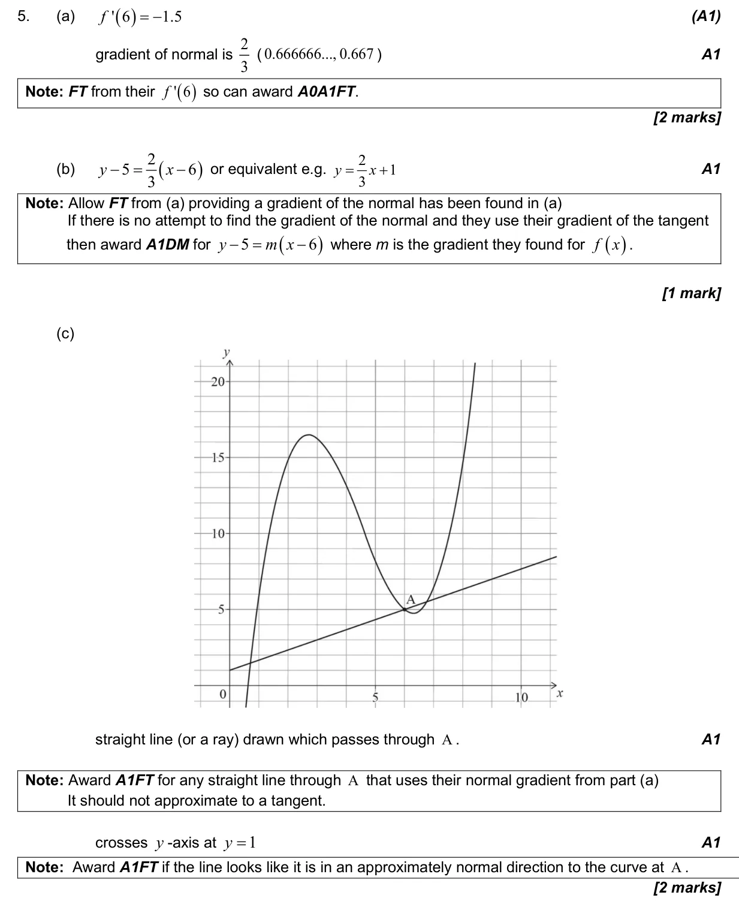
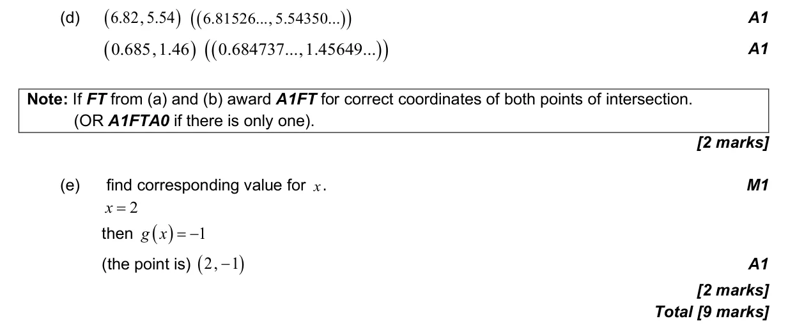

9 marks P1 TZ2 Calculator 5.4 Tangents and normals2.8 Transformations of graphs5.3 Differentiating polynomials, n in Z2.3 Graphs of functions2.4 Key features of graphs Question Hide breakdown abcde Markscheme 